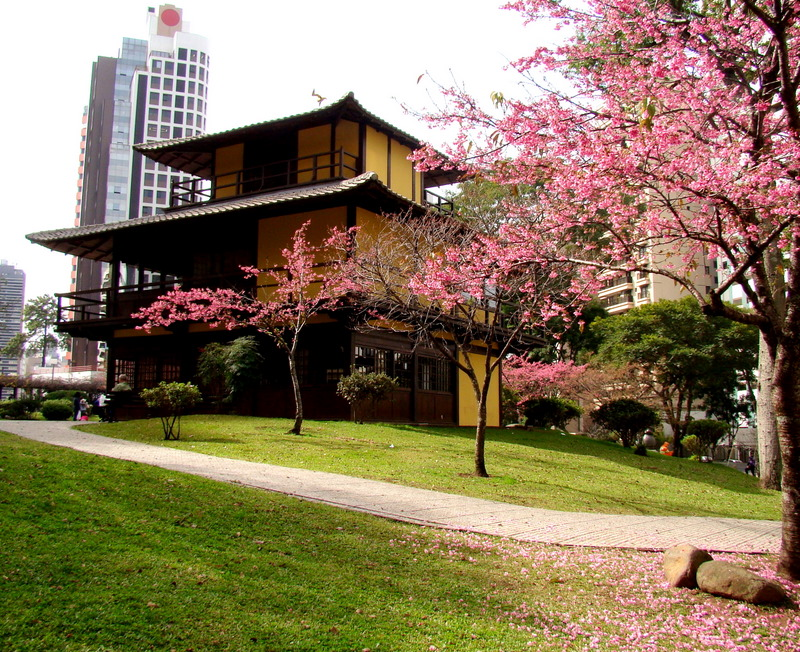
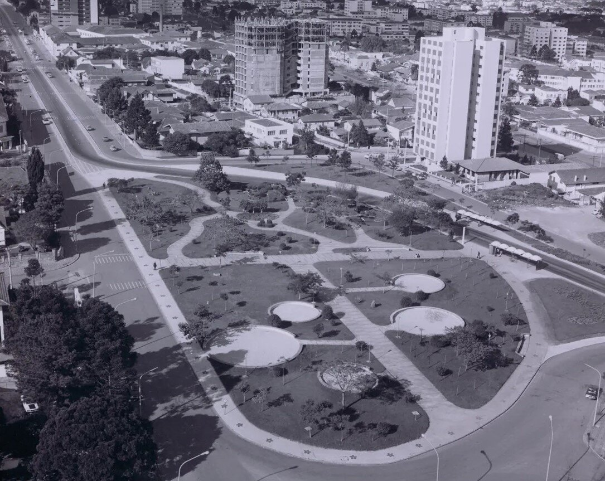
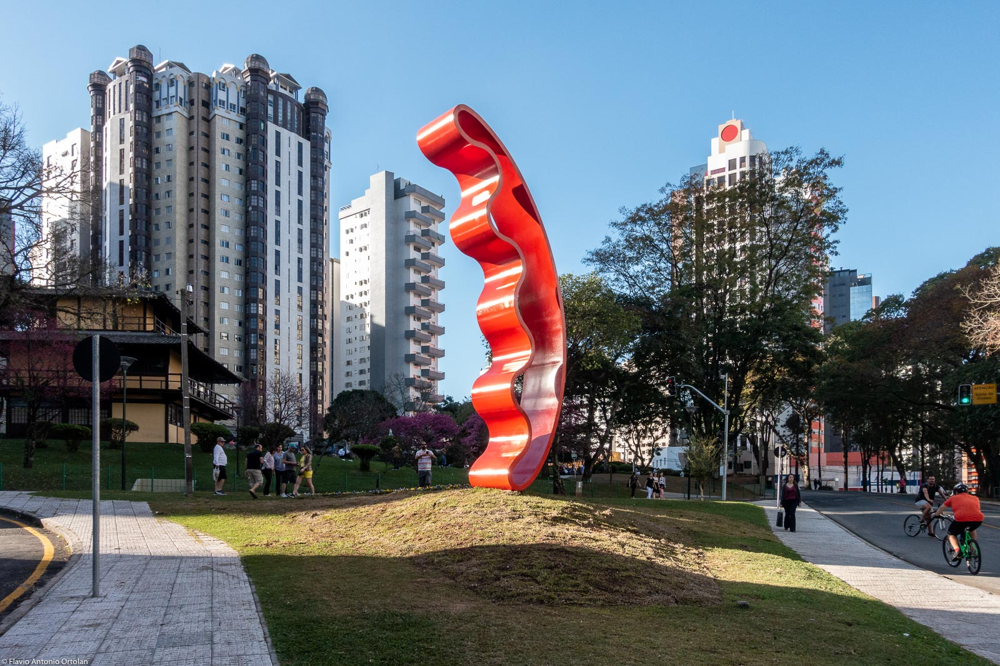

sobre o tema
Boas-vindas ao nosso site! Aqui você descobre a magia da Praça do Japão, um dos recantos mais charmosos e poéticos de Curitiba. Entre cerejeiras, lagos de carpas e uma arquitetura oriental fascinante, nosso objetivo é levar você por uma viagem pela história, pela cultura nipo-brasileira e pela tranquilidade desse cartão-postal inesquecível do Paraná. Explore e encante-se!

Contexto histórico
A Praça do Japão é um dos pontos turísticos e culturais mais emblemáticos de Curitiba, localizada na interseção das avenidas Sete de Setembro e República Argentina, na divisa entre os bairros Água Verde e Batel. Sua história começou em 1958, quando a área foi idealizada para homenagear os 50 anos da imigração japonesa no Brasil, culminando em sua inauguração oficial em 1962. Mais tarde, em 1993, durante as celebrações dos 300 anos da cidade, o espaço passou por uma ampla reformulação que definiu a estrutura que conhecemos hoje. O desenvolvimento da praça esteve diretamente conectado ao reconhecimento da expressiva comunidade nipo-brasileira instalada no Paraná a partir de 1910. Com uma área verde de aproximadamente 14.000 metros quadrados, o local foi desenhado no estilo dos jardins clássicos japoneses. Para compor o cenário, a praça recebeu trinta mudas de cerejeiras enviadas diretamente pelo Império Nipônico, além do traçado de lagos artificiais com carpas e cascatas. Ao longo das décadas, o espaço incorporou marcos importantes da cultura oriental. A praça recebeu uma lanterna de pedra doada pela província de Hyogo e a estátua de Buda, simbolizando a irmandade entre Curitiba e a cidade japonesa de Himeji. Com as obras da década de noventa, foram erguidos o Portal Japonês e o Memorial da Imigração Japonesa, estrutura que abriga a Biblioteca Hideo Handa e a tradicional Casa de Chá. Atualmente, a praça permanece como um polo de lazer e difusão cultural, sediando cerimônias de chá, oficinas e eventos tradicionais.

Importância cultural
A Praça do Japão desempenha um papel fundamental na construção da identidade cultural paranaense, servindo como um elo vivo entre a história do estado e a tradição oriental. O Paraná abriga uma das maiores comunidades de descendentes de japoneses do país, cuja influência moldou não apenas a agricultura e a economia local, mas também os costumes, a arquitetura, a gastronomia e os valores de toda a região. Nesse contexto, a praça vai muito além de um espaço de lazer ou cartão-postal de Curitiba. Ela funciona como um monumento à gratidão, ao respeito e à integração entre diferentes povos. Suas estruturas marcantes, como o Memorial da Imigração, a Casa de Chá e o Portal Japonês, somadas ao paisagismo repleto de cerejeiras e lagos com carpas, preservam a memória dos pioneiros nipo-brasileiros que ajudaram a construir o Paraná a partir do início do século XX. Além disso, o espaço é um dinâmico centro de difusão cultural no cotidiano da cidade. Ao sediar festivais folclóricos, exibições de artes marciais, oficinas e a tradicional cerimônia do chá, a praça aproxima a população em geral das raízes nipônicas. Essa convivência contínua fortalece o sentimento de pertencimento e reflete uma das características mais nobres da identidade paranaense: a capacidade de acolher e harmonizar diversas etnias, transformando a diversidade em patrimônio vivo e orgulho para o estado.

Curiosidades
Curiosiade 1
Existem 30 cerejeiras espalhadas pelo local que vieram diretamente do Japão enviadas pelo próprio Império Nipônico.
Curiosidade 2
Há uma lanterna tradicional esculpida em pedra que foi doada em 1979 pela província de Hyogo, região co-irmã do estado do Paraná.